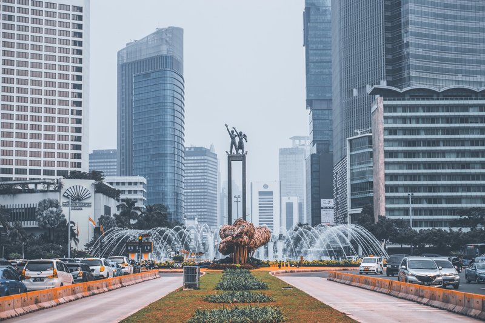

Jakarta
Jakarta adalah Ibu Kota Republik Indonesia. Provinsi DKI Jakarta terbagi menjadi lima wilayah Kota Administrasi dan satu Kabupaten Administrasi dengan luas keseluruhan wilayah 662,33 km².
Jakarta adalah Ibu Kota Republik Indonesia. Provinsi DKI Jakarta terbagi menjadi lima wilayah Kota Administrasi dan satu Kabupaten Administrasi dengan luas keseluruhan wilayah 662,33 km².